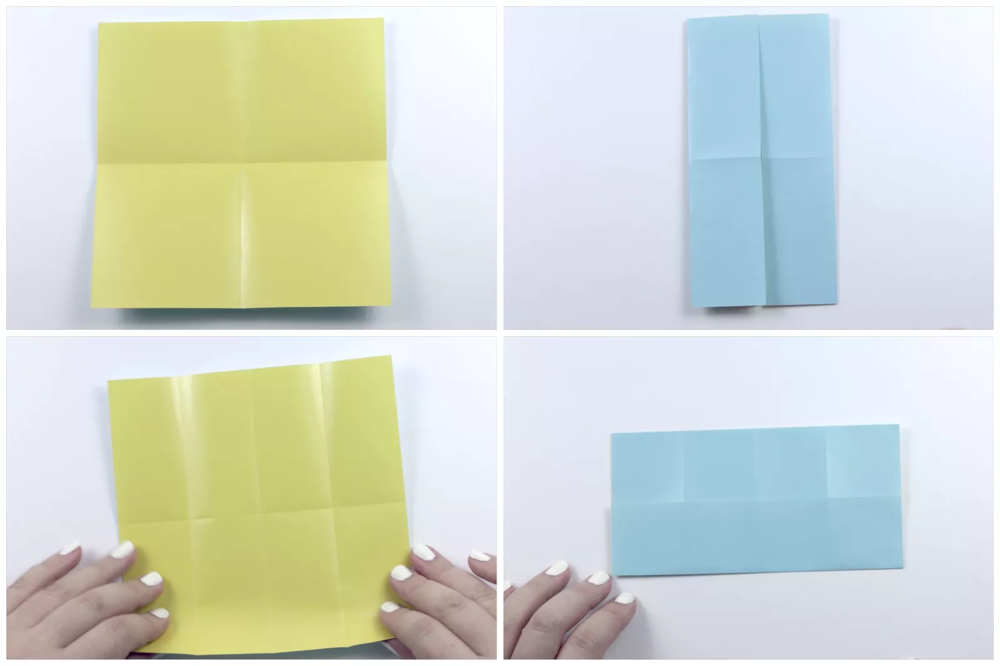
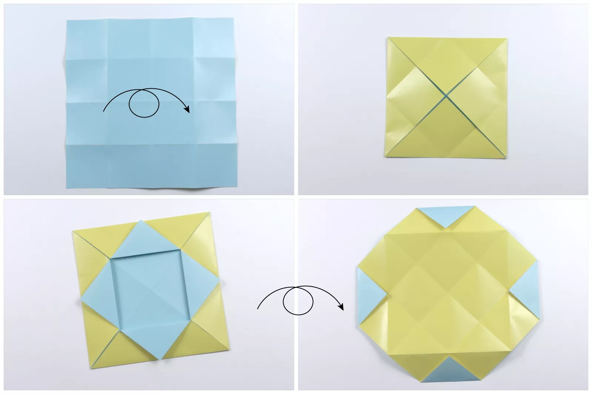
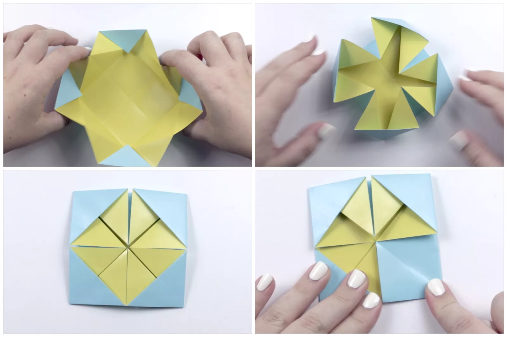
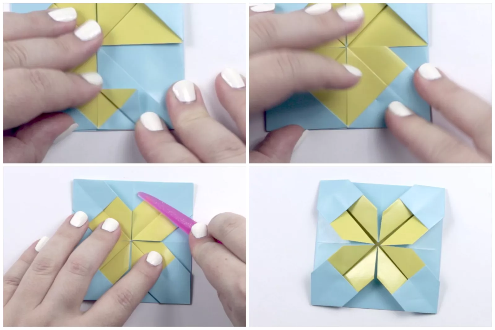
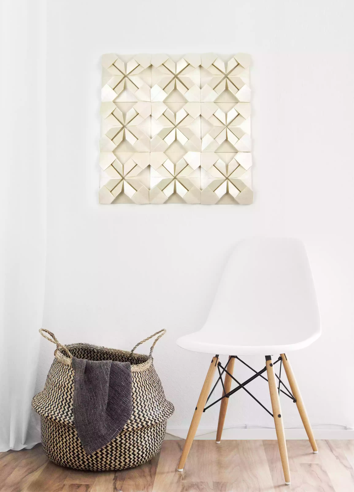

How to Create Stylish Wall Art With Origami Quilts
Easily create some very stylish wall art using origami.
Make large wall displays or small coasters with these
easy to make origami squares. These pretty origami
squares are very quick and simple to make, as they
only require one sheet of square paper. The larger
your paper, the larger your display will be.
Place the origami squares next to each other in rows of
three or more to create an aesthetically pleasing pattern.
Use a single solid color for each square or use lots of
different colors for a very fun and uplifting piece.
You can also create color gradients, for example, by using
three sheets of red, three sheets of orange, and three
sheets of yellow. Display the squares directly onto walls
with glue-tac or mount them into frames. Flattening them
behind glass prevents dust from settling inside the paper.
01: Fold the Paper in Half
Start off by folding your paper in half, from top
to bottom and from left to right. This creates
four equal sections. Next, fold the left and right
edges in to meet the central crease, fold well. Unfold
the previous step. Now fold the top and bottom edges to
the central crease. Unfold again.

02:Fold the Corners to the Center
Flip the paper over to the other side and fold all four
corners to the very center. Make these creases as
neat as you can. You may also want to use a bone folder
to make your creases sharper. Fold all four of the points
out from the center as shown. Open out the sides and flip
the paper back over to the other side.

03:Flatten the Creases
Bring all four diagonal edges towards the front.
All of the creases have already been created–you
are simply flattening them together. Once all of
the sides are collapsed, make sure to straighten out
the creases. Next, fold the flaps behind. Begin on the
bottom right section, folding one of the flaps over.

04:Finalize the Creases
Fold the corner of the flap back to the diagonal crease,
and then flip the flap back over to its original position.
Do this same process to all of the flaps, using a bone folder
or the side of your fingernail to finalize the creases.

Display Your Origami Wall Art
Here is an example of how to display your origami
wall art once it's finished. Using larger sheets
of square paper to start with will be quicker to
obtain this size, and give the art a bold and minimalist
look. Alternatively, if you have more time and patience,
using smaller sheets of square paper (and using lots of them)
will result in a very intricate and luxurious look.


Our Purpose Is To Sustainably Make the Pleasure and Benefits of sports Accessible to the Many.
Copyright-2021 Abdul Haq